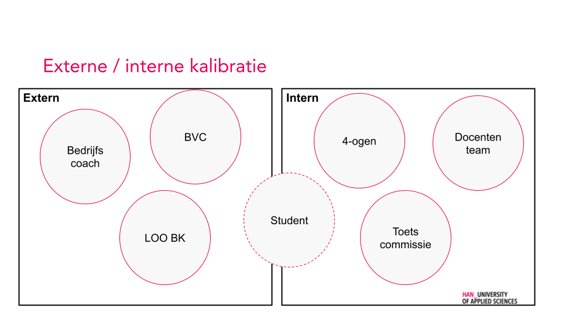
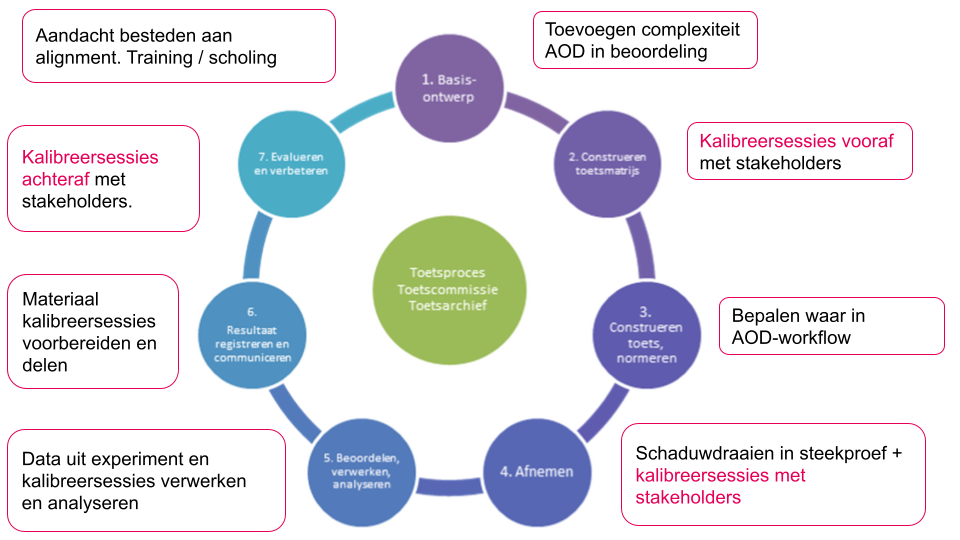

Basiskwalificatie Examinator (BKE)
Reflectie
Love: Wat vond ik prettig?
Werken in co-creatie
Omdat Jeroen en ik het vaak hebben over verbetermogelijkheden voor het afstudeertraject, was ik blij met de gelegenheid om er nu ook eens echt samen aan te mogen werken. Wat ik heel erg nodig heb voor een goede samenwerking zijn partners met weinig ego (of die deze uit kunnen zetten) en met een “JA, EN..”-houding. Jeroen is zo een persoon en daarom konden we heel snel schakelen en mooie resultaten boeken. Ik ben heel erg tevreden over de uitkomsten tot nu toe en heb heel veel zin om dit samen met Jeroen verder uit te werken.
Competente professional als uitgangspunt
De training was opgezet als een platform waarop onderwijsprofessionals hun kennis en ervaring konden uitwisselen en elkaar konden inspireren. De trainer heeft vanaf het begin gezorgd voor een sfeer van vertrouwen en respect, waardoor de bereidheid om te leren maximaal was. Dit zorgde er onder andere voor dat deelnemers die aanvankelijk sceptisch waren al snel actief deelnamen en bijdroegen aan het programma.
Holistische visie op toetsing
Een andere belangrijke succesfactor was voor mij dat er naar toetsing werd gekeken als een veelzijdig onderwijsmiddel. Een instrument dat op meerdere plekken, met verschillende doeleinden kan worden ingezet tijdens een studietraject.
Vrije ruimte in programma
Er was veel tijd ingepland voor het verwerken van verkregen inzichten, samenwerken aan de projecten en gesprekken met de trainer en collega’s. Hierdoor kreeg de cursus voor mij de benodigde diepgang en betekenis.
Balans theorie en interactie
De trainer had duidelijk nagedacht over een aantal didactische principes en er bijvoorbeeld voor gezorgd dat deelnemers regelmatig werden geactiveerd. Mijn favoriet was de oefening met de aliens.
Learned: Wat neem ik mee?
Vorm volgt doel
De gekozen toetsvorm is altijd een resultaat van het vastgestelde doel ofwel getoetste competenties. Dit kan zelfs betekenen dat in principe meerdere toetsvormen naast elkaar zouden mogen worden gebruikt, zolang ze maar hetzelfde meten.
Analytisch versus holistische toetsen
Ik vond dit onderscheid heel verhelderend en ga hier in de toekomst beter op letten bij discussies rondom beoordelingen.
Zel-com-model
We hebben het Zel-com-model toegepast op onze casus. Echter de discussie rondom de zwaarte van opdrachten vindt op meerdere plekken in het curriculum plaats en ook daar kan het model helpen betere afwegingen te maken.
Hogere authenticiteit betekent lagere subjectiviteit
Samen met het besef dat dit onontkomelijk is, was deze relatie voor mij een nieuw en waardevol inzicht. Ik ben vooral actief in de laatste jaren van de hoofdfase en dat betekent dat ik me in de toekomst minder hoef te focussen op vermindering van de subjectiviteit, maar vooral kan richten op validiteit en de functie van de toets in het leerproces (van zowel student als docent).
Alternatieve modellen Bloom
Ik maak veel gebruik van Bloom bij het formuleren van leeruitkomsten. Echter het komt wel eens voor dat de definitie van niveaus en taxonomieën niet lijkt te passen bij de bedoeling van een module. Nu begrijp ik dat dit komt doordat er verschillende categorieën doelstellingen zijn. Ik ga dit zeker nader uitzoeken en gebruiken.
Bepalen grens voldoende / onvoldoende

Dit heeft een relatie met het holistisch benaderen van toetsing. Het appelleert heel erg aan mijn behoefte om vanuit eigen professionaliteit te kunnen werken en oordelen.
Opdracht
Ik word regelmatig als begeleider en examinator ingezet bij afstudeeropdrachten (AODs). Voor deze casus werk ik samen met Jeroen van den Hoogen. Hij is praktijkcoordinator en onder andere verantwoordelijk voor alle processen rondom afstuderen. Het door ons gekozen onderwerp herken ik uit mijn eigen praktijk en ik geloof dat er nog veel ruimte is voor verbetering.
Wat ik in mijn werkomgeving zie, is dat vraagstukken vaak binnen een beperkte groep worden opgelost. In mijn beleving resulteert dit vrijwel nooit in een optimale oplossing. Voor onze casus vind ik het belangrijk dat bij het vinden van de definitieve oplossing een grote en diverse groep van stakeholders wordt betrokken. Om de kans te vergroten dat een daadwerkelijk optimale oplossing wordt gevonden, zal veel aandacht moeten worden besteed aan het ontwerpproces. Voor deze casus hanteren we hiervoor principes uit Design Thinking.
Tijdens de BKW-training hebben we ‘Discover’- en ‘Define’-fases doorlopen. We zijn begonnen met een inventarisatie van mogelijke vraagstukken die we zouden kunnen oppakken. Deze hebben we geordend naar prioriteit en we besloten het eerste punt op te pakken voor als BKE-casus. De methode van aanpak voor de fases “Develop” en “Deliver” zullen worden besproken bij het onderdeel “Continue ontwikkeling toetsbekwaamheid”.
Handelen binnen de context van toetsbeleid en -organisatie
Als eerste stap hebben we bepaald in hoeverre het huidige toetsprogramma omtrent de afstudeeropdracht overeenkomt met het geformuleerde toetsbeleid. Hiervoor hebben we het Toetsbeleid IBR 2017-21 als uitgangspunt genomen en deze vergeleken met de AOD-handleiding. Onze conclusie is dat alle relevante elementen zijn verwerkt in het huidige toetsontwerp van de AOD.
Handelen binnen het onderwijs- en toetsprogramma
De afstudeeropdracht is het laatste onderdeel van het studieprogramma. Alle competenties worden op het allerhoogste niveau (3) getoetst.
Omdat de AOD de afsluiting van het studietraject vormt, heeft deze toets altijd veel aandacht gekregen, zowel binnen de opleiding als bij externe stakeholders (bijv. tijdens accreditatietrajecten). Het huidige ontwerp, inclusief het bijbehorende kwaliteitssysteem werkt naar tevredenheid van alle betrokken (dit wordt regelmatig gecontroleerd m.b.v. kalibratiesessies).

Tijdens de eerst BKE-sessie hebben we bepaald welke aspecten van het huidige AOD-systeem we uitmuntend vinden (‘de parels’) en welke aspecten nog aandacht verdienen (‘de knikkers’).
De aandachtspunten hebben we geordend naar prioriteit. We hebben besloten om te focussen op het eerste onderwerp, nl. de vergelijkbaarheid van opdrachten.
Toepassen toetskennis en -vaardigheden
Als we kijken naar het model van Miller dan vindt de toetsing plaats op de hoogste cognitieve niveaus (‘Does’ en ‘Trusted’). De student moet hier laten zien dat hij gereed is om zelfstandig in de praktijk als professional te opereren en verdient hiermee zijn Bachelor diploma.
Een afstudeeropdracht wordt bij onze opleiding altijd uitgevoerd in de praktijk. Dit maakt het per definitie onmogelijk om een beheersbare toetsomgeving te creëren waarin iedere student gegarandeerd objectief getoetst wordt. Er is dus sprake van een hoge mate van zowel authenticiteit als subjectiviteit.
Één van de factoren die de subjectiviteit van de AOD als toets kan verhogen, is een verschil in complexiteit van opdrachten.
Op dit moment zijn er criteria geformuleerd om een basiscomplexiteit van de opdracht te borgen. Deze criteria gaan over de praktijkomgeving, de beslissingslaag en de mate van zelfstandig acteren. Ondanks deze kwaliteitscriteria blijkt uit ervaring dat er toch nog veel variantie is qua zwaarte van de opdracht.
We hebben onze eigen criteria vergeleken met hetgeen op landelijk niveau over dit onderwerp beschreven wordt en kwamen tot de conclusie dat op een aantal punten kwaliteitsverbetering wenselijk is.

Continue ontwikkeling toetsbekwaamheid
Om een beter gevoel te krijgen bij de door de LOO geformuleerde set van criteria rondom complexiteit hebben we vanuit onze eigen ervaring casussen opgehaald en deze volgens de criteria gewaardeerd.
Na deze exercitie ontstond het idee om dezelfde werkwijze te gebruiken tijdens een kalibreersessie om data op te halen bij onze stakeholders. Daarmee kunnen we vervolgens een goed beeld vormen omtrent de omvang van het probleem en de meest belangrijke aandachtspunten.
De probleemdefinitie vormt het uitgangspunt voor een tweede kalibreersessies. In deze sessie laten we dezelfde groep stakeholders een aantal ontwerpen voor een oplossing genereren. De afzonderlijke ontwerpen worden vergeleken en in een volgende ronde worden ze verwerkt in een aantal definitieve ontwerpen. Deze oplossingen zullen parallel worden getest in de praktijk. De testopzet zal ook weer via een aparte kalibreersessie worden bepaald.
Nadat de oplossingen zijn getest, zullen de testresultaten worden geanalyseerd en geëvalueerd. De aandachtspunten die hieruit volgen zullen worden gebruikt bij de start van een nieuwe verbetercysclus.
